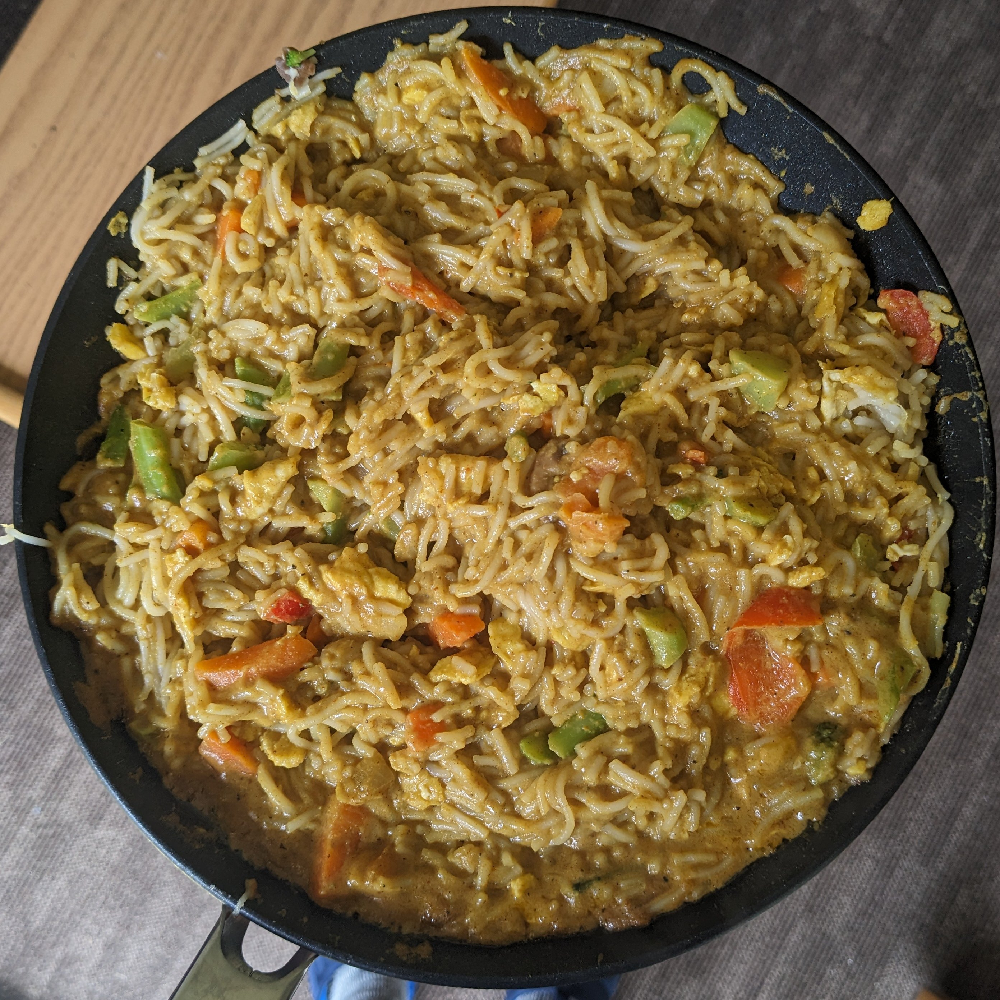
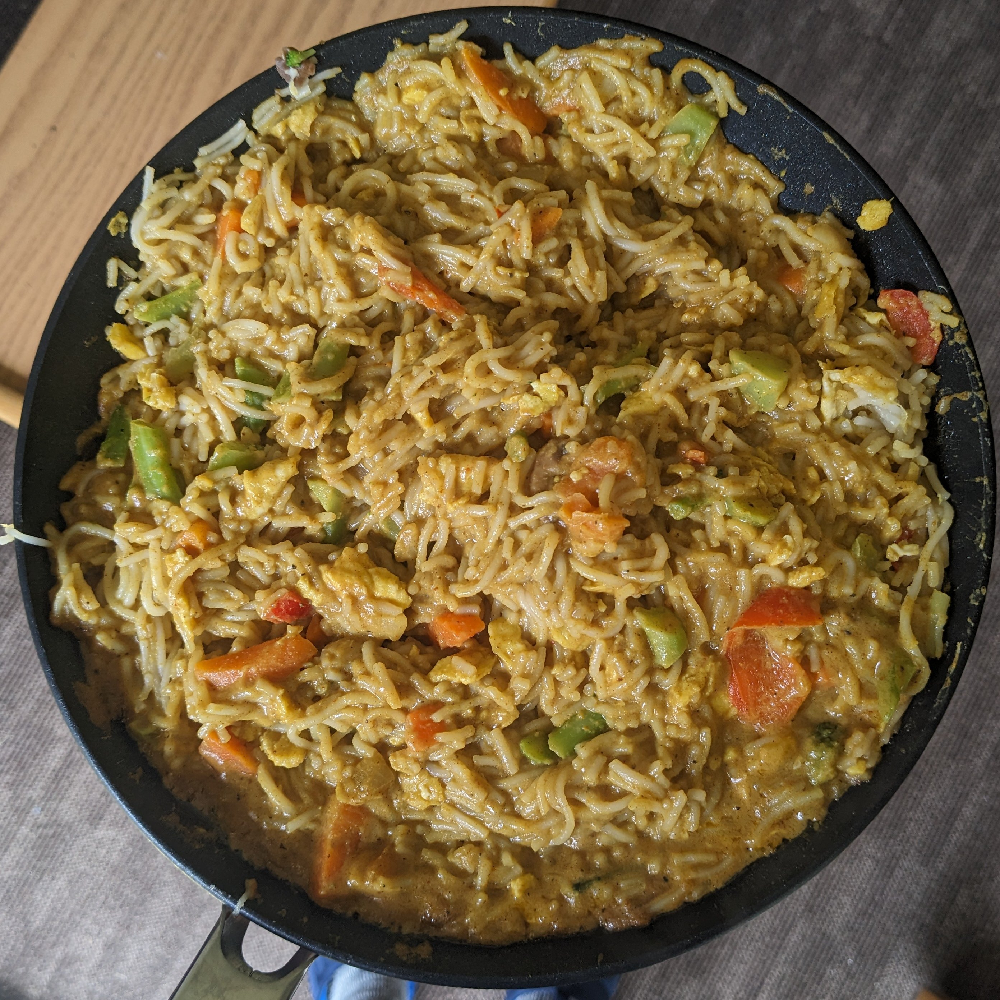

Origin: American/East Asian
Source: Tristan Goodell's Recipe
Category: Main Dish
This Dead Simple Fried Rice recipe is an incredibly modular and tasty dish. At its core, it's just rice, vegetables, protein, and oil. As such, the dish can be modified to serve as many or as few people as needed with a wide variety of food preferences. Experimentation with what specific ingredients you enjoy the most will unlock the full potential of this dish.
Recipe Ingredients
- Long-grain white rice
- Frozen Vegetables
- Eggs
- (optional) Milk
- Oil of Choice
- Salt
- Soy Sauce
- (optional) Additional Sauce: Curry Sauce/Paste, Spicy Teriyaki Sauce, and Sweet Chili Sauce are great options
- (optional) Additional Pre-cooked/Fast-cooking Protein of Choice: Nuts, sausage, tofu, and bacon are great options
- (optional) Additional Fresh Vegetables: Green onions, celery, and vidalia onions add great texture and flavor to the dish.
Recipe Steps
- In a rice cooker, add half a cup of rice, a cup of water, a touch of oil, and a pinch of salt. Cook the rice. Tip: if there are tough frozen veggies, such as broccoli, you might want to add the frozen veggies to the integrated steamer basket.
- On high medium heat on your stovetop, in a frying pan, add your chosen oil. Add some milk if desired. Then, scramble the eggs.
- Before the eggs are fully done, add the frozen vegetables. Add fresh vegetables when required so they are fully cooked by the end.
- (Optional) Add the additional protein when required so they are fully cooked by the end.
- Once the rice is done, add it to the pan. Poor your desired amount of Soy Sauce. Stir well.
- (Optional) After that, add your desired amount of additional sauce. Stir well.
- Let the fried rice cook until it is no longer visibly oily and the dish is nice and hot, with the vegetables fully cooked.
- Plate the fried rice. Enjoy!
Additional Images
 
